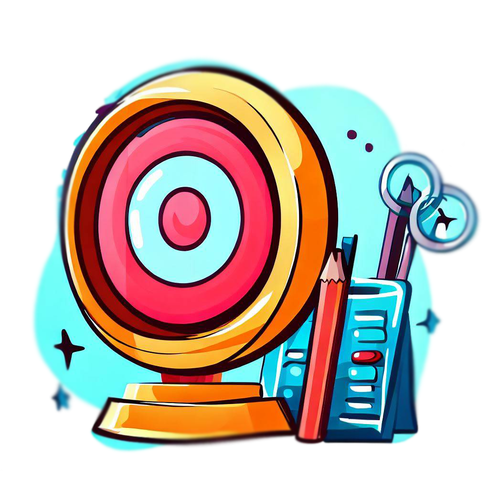

Objetivos
- Brindar herramientas para la evaluación, diagnóstico y tratamiento de las disfunciones vestibulares y los trastornos del equilibrio.
- Brindar conocimiento de los estudios complementarios del aparato vestibular.
- Enseñar el uso correcto de maniobras y ejercicios en el proceso de rehabilitación vestibular.
Competencias a adquirir:
- Tener nociones avanzadas de anatomía y fisiología del sistema vestibular.
- Saber realizar una correcta anamnesis del paciente con mareo y trastornos de equilibrio.
- Conocer las distintas patologías asociadas a mareos, vértigo y trastornos del aparato de equilibrio.
- Poder realizar un examen clínico del paciente con mareos.
- Discernir entre patologías vestibulares centrales y periféricas.
- Saber interpretar los distintos estudios complementarios del aparato vestibular.
- Saber realizar maniobras diagnósticas, evaluar nistagmus patológico y realizar maniobras de reposicionamiento de las distintas variantes de vértigo posicional paroxístico benigno.
- Realizar una rehabilitación dinámica y progresiva basada en evidencia científica.
